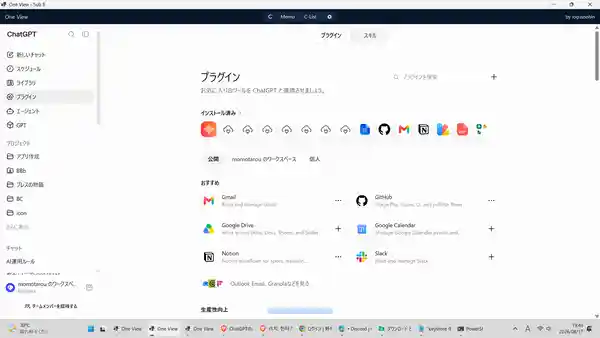
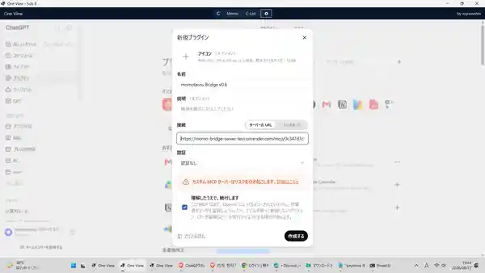

まず、お使いのChatGPTで確認してください。
以下の質問をお使いのChatGPTに張り付け確認してください。
「ChatGPTでカスタムMCPアプリを追加できるプランは？」
対応プラン以外の方は、このNo.5の実験を試すことはできません。
1. プラグイン作成画面を開く
左メニューの「プラグイン」を選び、プラグイン検索欄の右にある「＋」ボタンを押してください。

「＋」ボタンが表示されない場合は、カスタムMCPアプリを追加できる対応条件（プラン・ワークスペース権限など）を確認してください。
2. momotarou Bridge v0.6を登録する
「新規プラグイン」画面で、下の画像と同じように設定してください。

- 名前：momotarou Bridge v0.6
- 接続：サーバーのURL
- サーバーのURL：https://momo-bridge-server-test.onrender.com/mcp/0c347d7c53a1febff49f7a41fa617124/
- 認証：認証なし
- 「理解したうえで、続行します」にチェック
- 「作成する」を押す
今回はここまでです。Discordの読み取り・書き込み実験はまだ追加していません。